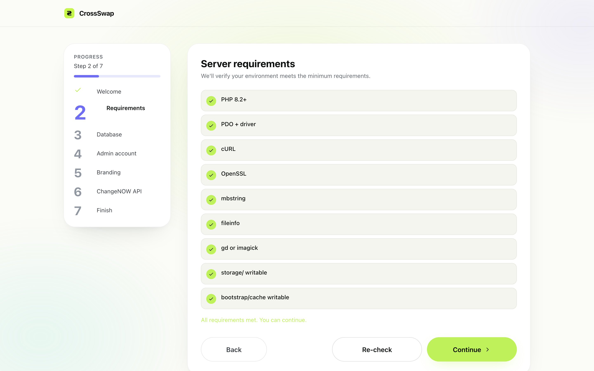
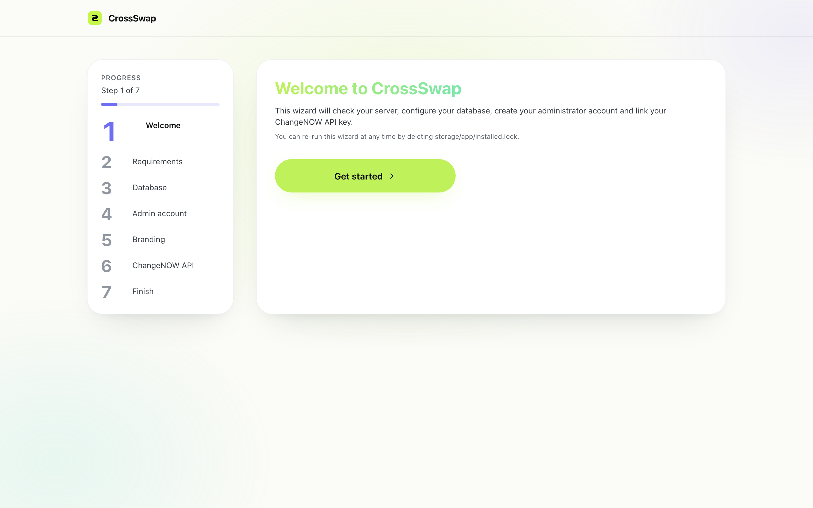
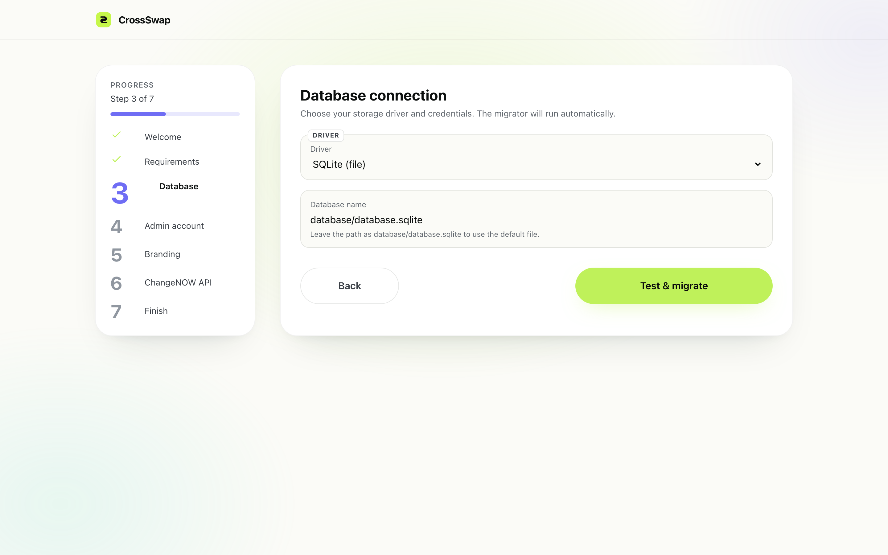
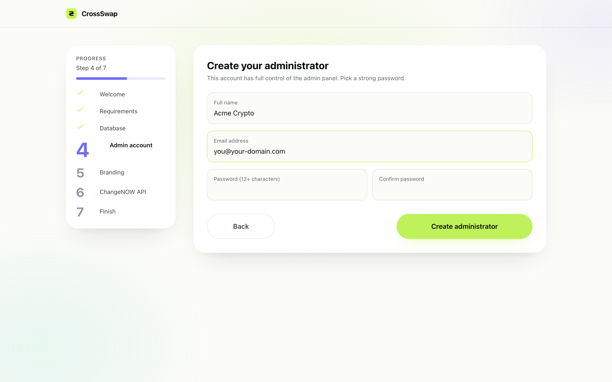
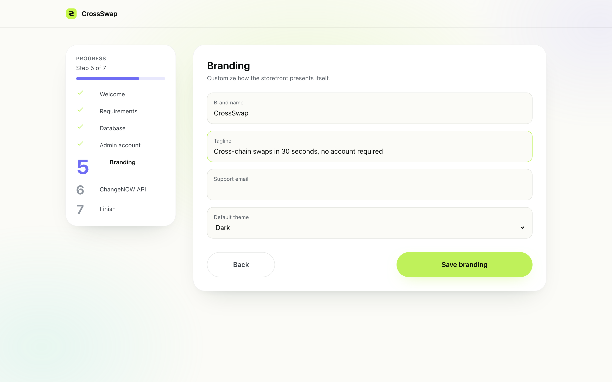
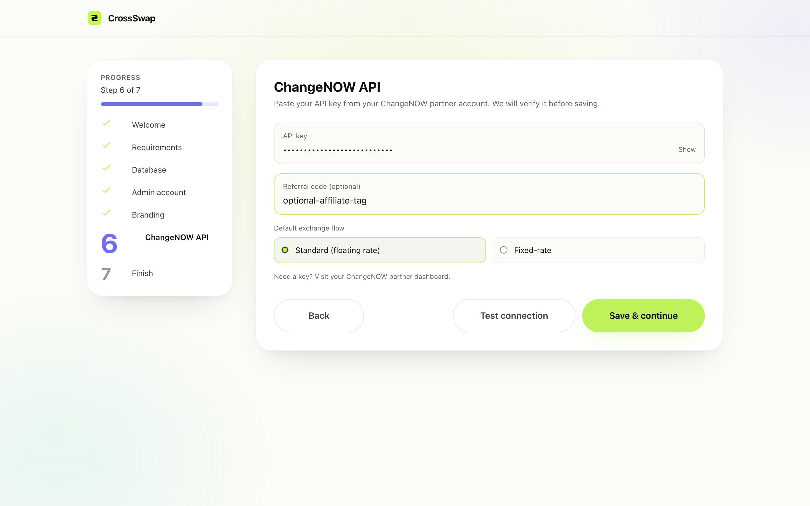
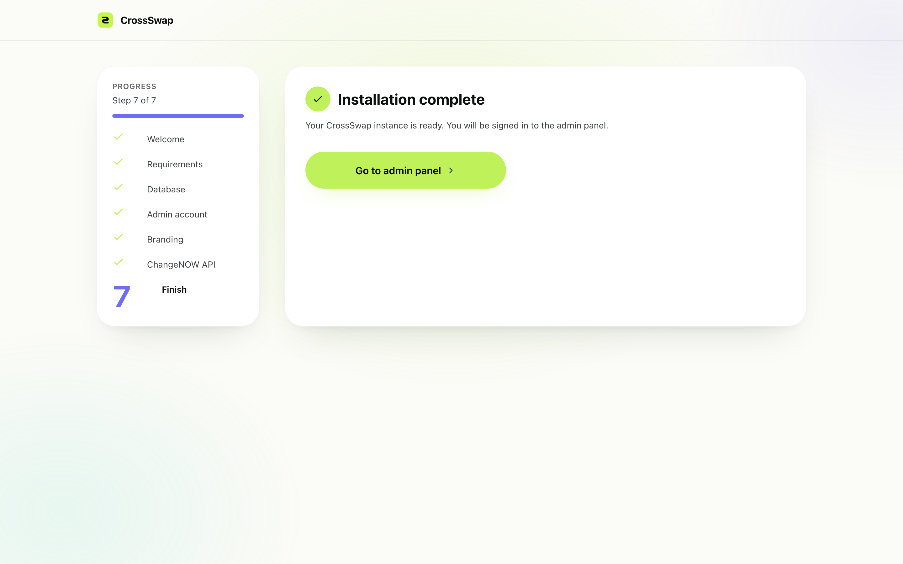
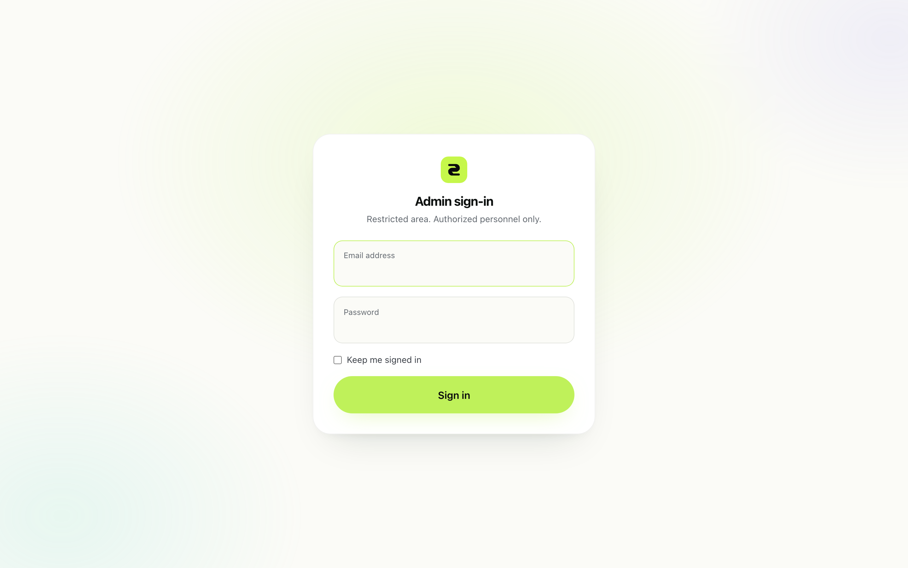

Installation
CrossSwap installs through a guided browser-based wizard. On a server that already meets the requirements, the whole process takes about ten minutes — no command-line work required.
public/build/ bundle and a complete vendor/ folder. You can run CrossSwap with no Node.js and no Composer — the entire install boils down to uploading files and pointing the browser at /install.
1. System requirements
Before uploading anything, confirm your server meets the following matrix. The installer's first screen runs a live check — you can skip ahead to it if you want to verify your environment before reading the rest.
| Requirement | Minimum | Recommended |
|---|---|---|
| PHP | 8.2 | 8.3 / 8.4 |
| PHP extensions | bcmath, ctype, curl, dom, fileinfo, json, mbstring, openssl, pcre, pdo (+ one of pdo_sqlite, pdo_mysql, pdo_pgsql), tokenizer, xml, zip, intl, sodium, and either gd or imagick | + redis |
Composer (only if not using shipped vendor/) | 2.x | 2.7+ |
| Node.js (only if rebuilding assets — buyers can skip) | 20 | 22 |
| Database | SQLite (default, zero setup) / MySQL 8+ / PostgreSQL 14+ | MySQL 8.0.30+ or PostgreSQL 16 |
| Web server | Apache 2.4 / Nginx 1.20 / Caddy 2 | Nginx 1.24 + PHP-FPM |
| RAM | 256 MB | 512 MB+ |
| Redis (optional — queue/cache acceleration) | — | 7.0+ |
The installer's requirements step (Step 2 in the walkthrough) verifies each extension and shows a clear hint when something is missing.

2. Hosting compatibility
CrossSwap runs on the same hardware as any other modern Laravel application. Specific shared-hosting notes:
- cPanel — create a Node app or PHP app, set the document root to
public/, and use the bundled cron UI for the scheduler. - Plesk — use the “Hosting Settings” panel to point the document root at
public/, then enable PHP 8.2+ from the PHP Settings page. - CyberPanel — create a website, set the open_basedir to include the parent of
public/, and add the queue worker as a systemd service from the SSH terminal. - VPS — the recommended setup. See the manual-install section below.
3. Step-by-step browser installer
Upload the archive contents to your web root (the document root must point at the public/ directory), set permissions on storage/ and bootstrap/cache/ to 775, then open the site in a browser. CrossSwap will automatically redirect to /install.
chmod -R 775 storage bootstrap/cacheWelcome

The welcome screen introduces the wizard and confirms the installer is reachable. Click Begin install to move on. No data is written.
Requirements check
This page runs phpinfo() internally, queries the file-system writability of storage/ and bootstrap/cache/, and reports each one in real time. If a row is red, fix it on the server (install the extension, re-permission the directory) and click Re-check.
Database

Fields on this screen:
127.0.0.1. Ignored for SQLite.database/database.sqlite by default). For MySQL/PostgreSQL, the database name — create it first.CREATE / ALTER / DROP privileges so migrations can run.When you click Test & migrate, the installer opens a live connection, writes the credentials to .env, and runs php artisan migrate --force for you.
Admin account

This admin is automatically assigned the superadmin role.
Branding

dark (default), light, or auto (follows the visitor's OS preference).ChangeNOW API key

standard (floating market rate) or fixed-rate (rate locked at the moment of swap).The installer calls /install/api with test_only=true when you press Test connection; it briefly stores the key, fetches the currency list to confirm validity, then either keeps it or rolls back.
Done

Pressing Finalize triggers /install/finalize, which writes storage/app/installed.lock so the installer cannot run again, logs you into the admin panel automatically, and lands you on the dashboard.

/admin/login show this screen.
4. Manual install (CLI)
For buyers who prefer the command line, the same flow boils down to:
git clone <your-repo> crossswap
cd crossswap
composer install --no-dev --optimize-autoloader
cp .env.example .env
php artisan key:generate
# Edit .env to set DB credentials, then:
php artisan migrate --force
php artisan db:seed --class=AdminRolesSeeder --force
php artisan storage:link
chmod -R 775 storage bootstrap/cacheCreate the first admin and write the lock file directly:
php artisan tinker --execute="\
\\App\\Models\\Admin::create([\
'name' => 'Admin',\
'email' => 'you@example.com',\
'password' => bcrypt('change-me-12chars'),\
])->assignRole('superadmin');"
touch storage/app/installed.lockFinally, drop your ChangeNOW key into the settings table by logging into /admin and using the Settings → API management page.
5. Hosting checklist
Run through these once before you start sending real traffic. Most stuck-swap reports trace back to a missing item in this list.
File permissions
The web user (typically www-data, nginx, or apache) must own and be able to write the two state directories:
sudo chown -R www-data:www-data storage bootstrap/cache
sudo find storage bootstrap/cache -type d -exec chmod 775 {} \;
sudo find storage bootstrap/cache -type f -exec chmod 664 {} \;If your hosting panel runs PHP-FPM under a different user, swap www-data for that user.
Queue worker
CrossSwap polls the upstream exchange for swap status. You need a long-lived worker:
# simplest:
php artisan queue:work --tries=3 --timeout=120
# recommended in production (Horizon dashboard at /horizon):
php artisan horizonSupervise it with systemd or supervisord so it restarts on failure and after deploys. A complete systemd unit is in section 6 below.
Scheduler cron
The scheduler dispatches the polling, stuck-flagging, limit-order, and recurring jobs. Add this single line to the web user's crontab (crontab -e as that user):
* * * * * cd /var/www/crossswap && php artisan schedule:run >> /dev/null 2>&1crontab directly.
HTTPS & APP_URL
Set APP_URL=https://yourdomain.tld in .env and serve the site over HTTPS. CrossSwap forces secure cookies and HSTS when APP_ENV=production.
6. Post-install: queue, scheduler, mail
Queue worker
CrossSwap polls the upstream exchange every minute. A long-lived worker must be running:
php artisan horizonFor production, supervise it with systemd or supervisord so it restarts on failure and after deploys. Example systemd unit (/etc/systemd/system/crossswap-horizon.service):
[Unit]
Description=CrossSwap Horizon worker
After=network.target
[Service]
Type=simple
User=www-data
WorkingDirectory=/var/www/crossswap
ExecStart=/usr/bin/php artisan horizon
Restart=always
RestartSec=3
[Install]
WantedBy=multi-user.targetScheduler cron
The scheduler dispatches the polling, stuck-flagging, limit-order, and recurring jobs. Add this one line to the web user's crontab:
* * * * * cd /var/www/crossswap && php artisan schedule:run >> /dev/null 2>&1Add SMTP credentials to .env:
MAIL_MAILER=smtp
MAIL_HOST=smtp.example.com
MAIL_PORT=587
MAIL_USERNAME=your-username
MAIL_PASSWORD=your-password
MAIL_ENCRYPTION=tls
MAIL_FROM_ADDRESS=hello@yourdomain.tld
MAIL_FROM_NAME="${APP_NAME}"Then clear the cache so the new values take effect:
php artisan config:clear7. HTTPS
Production traffic must be served over HTTPS — CrossSwap enforces secure cookies and HSTS when APP_ENV=production.
Option A — Cloudflare Flexible / Full
If your origin is HTTP-only, point the domain at Cloudflare, enable the SSL setting (Flexible or, ideally, Full Strict), then add this in App\Providers\AppServiceProvider::boot() if it isn't already enabled by env:
if ($this->app->environment('production')) {
URL::forceScheme('https');
}Option B — Let's Encrypt (Nginx)
sudo apt install certbot python3-certbot-nginx
sudo certbot --nginx -d yourdomain.tld -d www.yourdomain.tld
sudo systemctl reload nginxCertbot installs a daily cron that auto-renews the certificate 30 days before expiry.
Option C — Caddy (zero config)
Caddy 2 obtains and renews certificates automatically. A complete Caddyfile:
yourdomain.tld {
root * /var/www/crossswap/public
php_fastcgi unix//run/php/php8.3-fpm.sock
file_server
encode gzip zstd
}8. Post-install verification checklist
Tick these off after the installer completes to confirm the deployment is healthy:
- Visiting
/shows the storefront with the swap card. - Visiting
/installredirects back to the home page (lock file is in place). - Signing in at
/admin/loginlands on the dashboard. - The dashboard shows 0 transactions on a fresh install rather than an error.
- The currency selector on the homepage lists 50+ currencies (proves the ChangeNOW key works).
- A test swap reaches the Waiting state (and starts polling).
- The
queue:workor Horizon process is running —php artisan horizon:statusreports running. - The scheduler cron has logged a run in the last minute —
php artisan schedule:list. - An outbound test email arrives in the inbox of the support address.
- Browsing the site over HTTPS shows a valid certificate and no mixed-content warnings in DevTools.